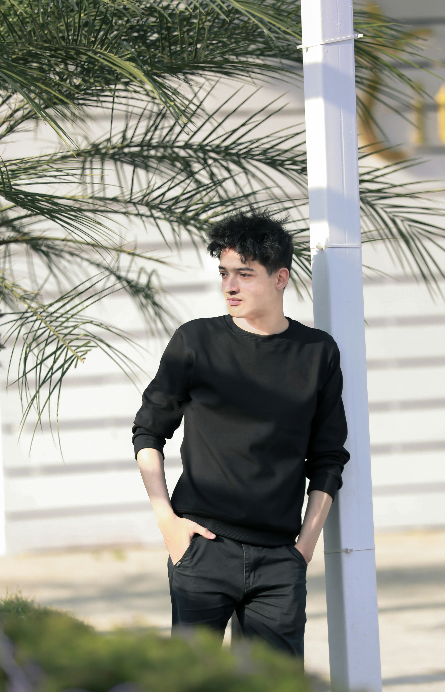

“LearnBridge m’a donné confiance en moi et des compétences solides en cybersécurité. Une formation de haut niveau !”
Témoignages Étudiants
Ils ont vécu l'expérience LearnBridge

“Des cours pratiques, des projets concrets et une ambiance familiale. Je recommande LearnBridge à 100 % !”
Yassine Kharbouch
Génie Informatique“Grâce à cette école, j’ai trouvé ma voie et un stage dans une grande entreprise. Merci LearnBridge !”
Amelia Rivera
Systèmes Embarqués"L’ambiance multiculturelle à LearnBridge m’a permis de m’ouvrir au monde. J’ai adoré chaque moment ici. Merci à toute l’équipe pour ce parcours inoubliable."
Fadil El Amrani
Génie Réseaux & Services
"J’ai été impressionnée par la qualité des formations. Les projets concrets m’ont beaucoup aidée à me sentir prête pour le monde professionnel. Une vraie école de leaders !"
Janat B.
Génie Industriel“LearnBridge a changé ma vie. L’approche pratique et les enseignants engagés m’ont permis de développer de vraies compétences. Aujourd’hui, je travaille sur des projets internationaux en cybersécurité.”